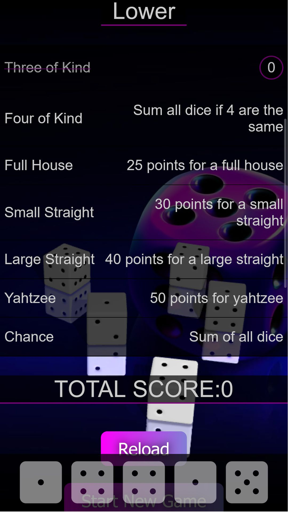
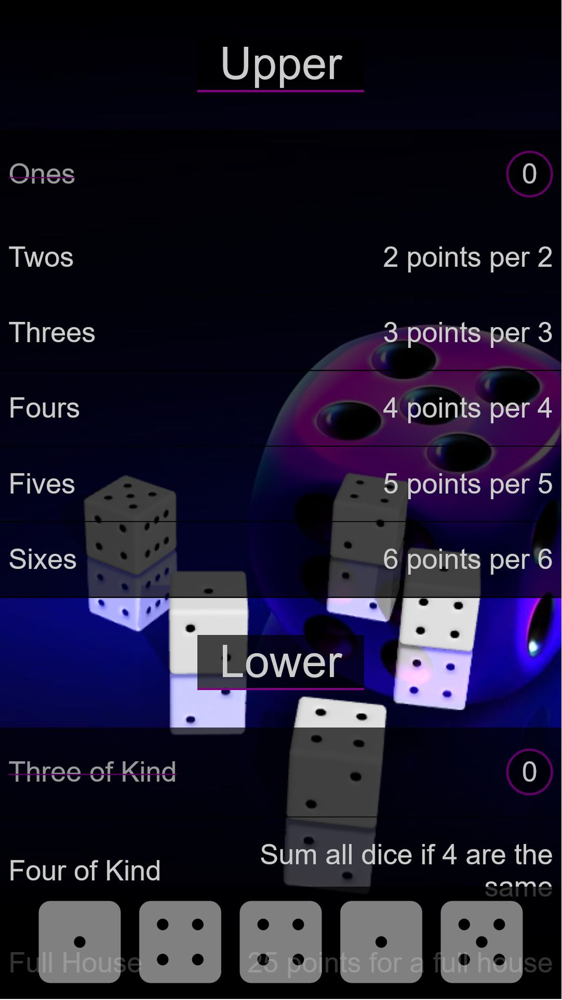
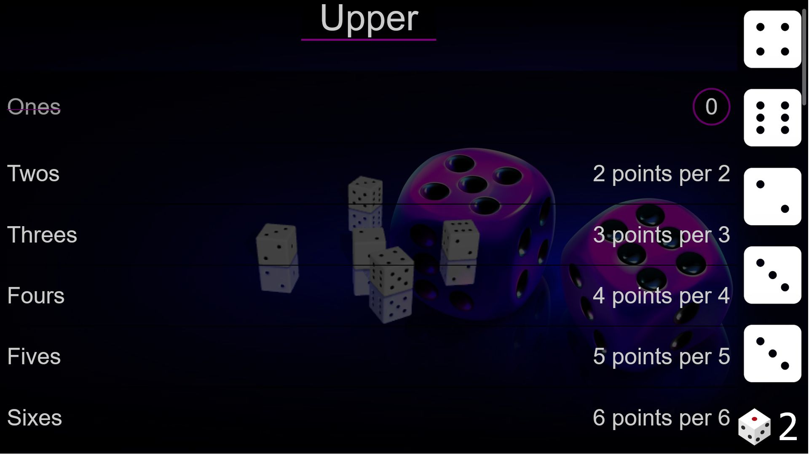
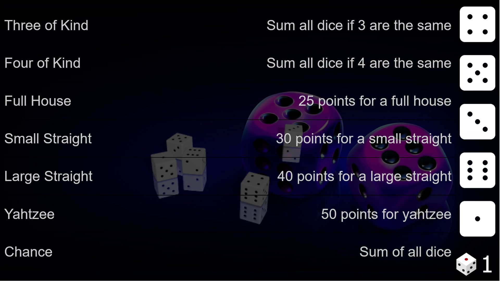
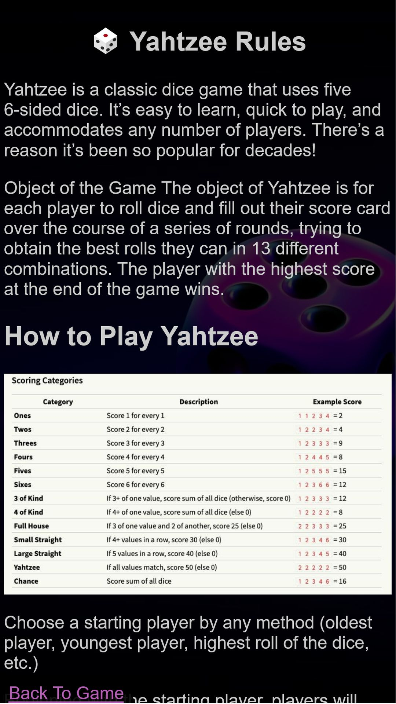

Yahtzee: Classic Dice Game
Rolling the Excitement: Rediscovering Fun with Yahtzee
In the realm of classic board games, few titles hold the enduring charm and universal appeal of Yahtzee. This iconic dice game, a staple in households for over six decades, continues to captivate players with its simple yet engaging mechanics. In this digital age, "Yahtzee: Classic Dice Game" brings the thrill of rolling the dice and strategic decision-making to a new generation, combining the nostalgia of the traditional game with the convenience of modern technology.
A Dice-rolling Tradition
Yahtzee's roots trace back to the mid-20th century when game creator Edwin S. Lowe introduced it to the world. The game's brilliance lies in its elegant simplicity – five dice, a scorecard, and a strategic challenge that unfolds with each roll. Players aim to achieve specific combinations, from a full house to the elusive Yahtzee (five of a kind), testing both luck and strategic prowess.
Digital Yatzee Transformation
Yatzee seamlessly transitions the tactile joy of rolling physical dice to the digital realm. The app faithfully preserves the essence of the original game, allowing players to shake their virtual cup and watch the dice tumble in anticipation. The familiar scorecard, now on-screen, tracks progress, making it easy to keep tabs on victories and challenges.
Strategic Decision-making
Beyond the luck of the roll, Yahtzee is a game of choices. Players face the decision of which combinations to aim for and when to push their luck for a higher score. The app's user-friendly interface preserves the strategic nuances, ensuring that every decision matters, just as it did in the classic board game.
Multiplayer Thrills
One of the highlights of Yahtzee Classic Dice Game is the ability to play with friends or challenge AI opponents. The multiplayer mode recreates the social dynamics of the traditional game, allowing players to compete for the highest scores, share the excitement of a lucky roll, and engage in friendly competition.
Accessible to All
Whether you're a seasoned Yahtzee veteran or a newcomer to the game, the digital adaptation ensures accessibility for players of all skill levels. The rules are straightforward, and the app offers helpful prompts, making it an ideal choice for family game nights or quick solo challenges.
Nostalgia Meets Innovation
Yahtzee Classic Dice Game successfully marries nostalgia with innovation. The essence of gathering around a table for a spirited game of Yahtzee remains, while the app introduces new possibilities, such as online multiplayer and convenient score tracking.
As the digital era propels us forward, Yahtzee Classic Dice Game stands as a testament to the timeless appeal of a classic pastime. It's not merely a game; it's a bridge between generations, connecting the fond memories of rolling dice with the excitement of modern gameplay. So, whether you're chasing that elusive Yahtzee or strategizing for the perfect score, this digital adaptation ensures that the thrill of Yahtzee continues to roll on, captivating players old and new.